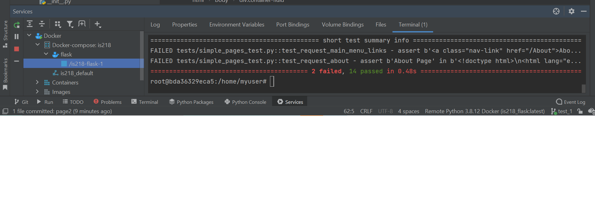

Python/Flask
Running tests
Generally, PyCharm runs and debugs tests in the same way as other applications, by running the run/debug configurations you have created. When doing so, it passes the specified test classes or methods to the test runner.
In many cases, you can initiate a testing session from a context menu. For this purpose, the Run and Debug commands are provided in certain context menus. For example, these commands are available for a test class, directory, or a package in the Project tool window. They are also available for a test class or method you are currently working on in the editor.

Running a pytest by its console allows you to understand the error and backtrack to where the issue has pertained.
This in-turn allows us to go back to the root of the problem and fix it.
Link to my Github
My Project
Files and their representation
Simple pages
- Templates
- about: general info regarding self
- index: general index page
- Pages1-4: general data pages
- Dunder page
Static
- Css:Basic Styling and format
- images:image files used in current web pages
- JS: JavaScript :runs basic javascript on pages
templates
- base html: basic file layout to work on
- dunder file
- Run file
Calculator
- Operations:basic operations for maths
test
- Test pages to check for errors
venv
- Flask file : creates flask
- Composer file : Ochestration file that contains the configuration to develop locally, it overrides the Dockerfile to run the flask development server instead of running the gunicorn server that is used for hosting on Heroku
- docker file: File used to create an image to run in container and runs the program
- Heroku.yml: Transfers the flask on heroku app so it runs via Heroku
- Pytest file : the .ini file is responsible for excuting pytests properly
- Read me and requirements
- Setup file